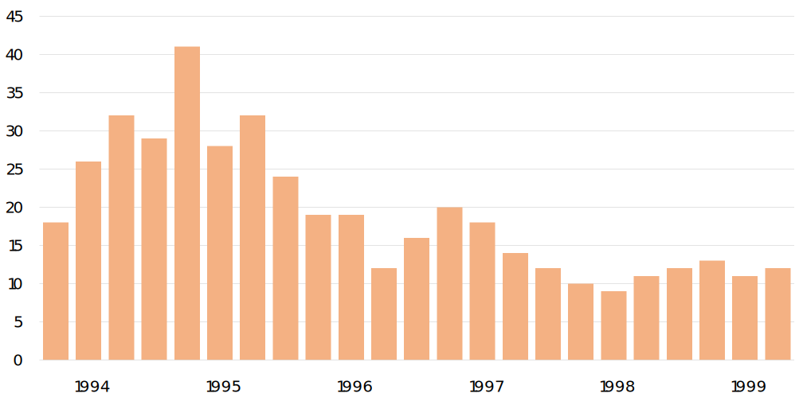
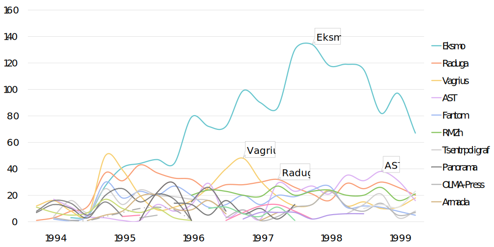

(This is Part III in a series, check out Part I
and Part II)
The previous posts in this series have pointed out that Russian bestsellers overtook imports
over the course of the 1990s and showed how genre innovations drove that tendency.
This post focuses on another tendency our data shows: the consolidation of
the publishing world. Consolidation has been a widespread tendency in capitalism,
especially in the age of financialized capital and globalization. As Dan
Sinykin recently argued, the conglomeration and corporatization of publishing
has been a major driving force in U.S. literature after the second world war.
In post-Soviet Russia the generalized capitalist imperative towards conglomeration was
compressed. The early publishing industry was extraordinarily fecund with several
new publishers arising and fading away quickly in the early 1990s. By the end of the
decade, however, a few publishers had emerged as clear leaders. In the 2010s, those
leaders—AST, Eksmo, and Vagrius, primarily—would all consolidate into one publishing
conglomerate, AST, which as of 2022, controlled more than half of trade publishing by
market share. Its closest competitor, Prosveshchenie, is a textbook publisher that claims
17% of market share, but occupies a very different corner of the publishing industry.

The market share of various genres by percentage of appearances on the
Knizhnoe obozrenie fiction bestseller lists 1993–1999.
This simple bar chart shows the number of distinct publishers appearing on the bestseller lists,
from a peak in the fourth quarter of 1994 when 41 different publishers made the lists,
to a trough in the first quarter of 1998, when only 9 publishers appeared. The number
of distinct publishers hovered around that low mark for the remainder of the lists’ life.
The next chart, created by Amelia Benjamin, shows the early chaos of the publishing world out
of which emerges a clear leader, Eksmo. Note how Eksmo’s dominance coincides with the rise
of Aleksandra Marinina and the zhenskii detektiv (see part
II of this series). Marinina was not Eksmo’s only bestselling author, but she helped the
house occupy and maintain its dominant position in the second half of the 1990s.

The market share of various genres by percentage of appearances on the
Knizhnoe obozrenie fiction bestseller lists 1993–1999.
The consolidation of publishing was not only a corporate phenomenon, it was also a geographic
one. Long before the fall of the Soviet Union, Moscow dominated Russian-language publishing.
hat situation never completely changed. But the early ferment in publishing diversity meant
that the bestseller lists included a surprising number of titles published outside of Moscow.
Moscow’s centripetal force, however, tamped down this geographic diversity as the publishing
industry consolidated on a corporate level over the 1990s.
The map below shows the dynamics of market publishing over the first post-Soviet decade,
according to the Knizhnoe obozrenie bestseller lists. The publication cities of
bestsellers appearing on the fiction list are indicated by the size of the dot at that city's location.
Press play in the lower left to see the geographical consolidation unfold over time.
The market share of various genres by percentage of appearances on the
Knizhnoe obozrenie fiction bestseller lists 1993–1999.
It is worth recalling that these lists are explicitly “Bestsellers of Moscow” and make no pretensions
to geographical representation. Neverless the change over the decade is striking. Though Moscow is dominant throughout the life of the lists (in fact the size of Moscow's dot is
artifically limited for legibility), the geographic spread of bestsellers diminishes sharply throughout
the decade. From 1993 to 1995 12 distinct publication cities appear on the lists; from 1997 to 1999, only 4.
As Nina Armstrong, who compiled the “Intellectual Bestseller” lists, noted, the pace of
consolidation shown here applies only to fiction. The intellectual bestseller lists remained
diverse along the axes of both geography and publishing houses, throughout the 1990s. The
non-fiction lists seem to have consolidated more in line with the fiction lists, suggesting that
the chief factor in this particular tendency is the accumulation of capital. Where there is
little money to be made (as in intellectual publications), consolidation stalls.
Though we have not compiled similar visualizations for the “Intellectual Bestseller”
or non-fiction lists, you should! You are welcome to download the open source data set
that we compiled for this project and create further analyses that buttress, expand, or
refute the stories told here.